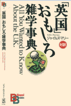

|  | This book is a pen portrait of the United Kingdom and its people, specifically designed to overthrow Japanese preconceptions about the country. The book is divided into 9 sections which discuss National Character, Society, Entertainment, Food & Drink, Sports, Politics and Royalty, History, Economics and finally, Miscellaneous Questions. The book was originally written in English, and is presented with the English on the right-hand page and the Japanese translation on the left, making it an excellent way to study advanced written Japanese. The book is illustrated with humorous caricatures and is layed out in a Q & A format. Questions tackled include: - What are the Differences between the British and the Americans? - Why are the British so Negative in their View of Life? - What is the British Class System? - Who are the Richest British Popstars? - How has Rupert Murdoch changed the British Media? - Why is British Food so Bad? - Are the British Really a Nation of Tea Addicts? - What are Football Hooligans? - What is 'New Labor'? - Why was Princess Diana so popular? - How did the British Empire Develop? - When did Britain cease to be a Superpower? - What Businesses is Britain good at? - Why are British Taxis so good? - What is the SAS? | |
| Close |